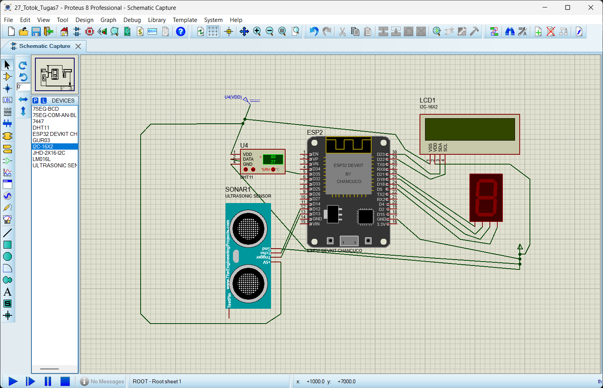

Hasil Fotografi, Editing, dan Dokumentasi Program
Kelompok X terdiri dari.
Berikut adalah dokumentasi foto selama proses pengerjaan proyek.

Hasil akhir proyek.
Proses pengerjaan proyek.
Dokumentasi proyek.
Editing dilakukan menggunakan aplikasi ini.
Berikut contoh program sederhana kami.
#define LED_PIN 13
void setup() {
pinMode(LED_PIN, OUTPUT);
}
Melalui proyek ini, kelompok kami mempelajari cara merangkai komponen Arduino, membuat program sederhana, melakukan pengujian, serta mendokumentasikan proses pengerjaan dalam bentuk foto dan website.